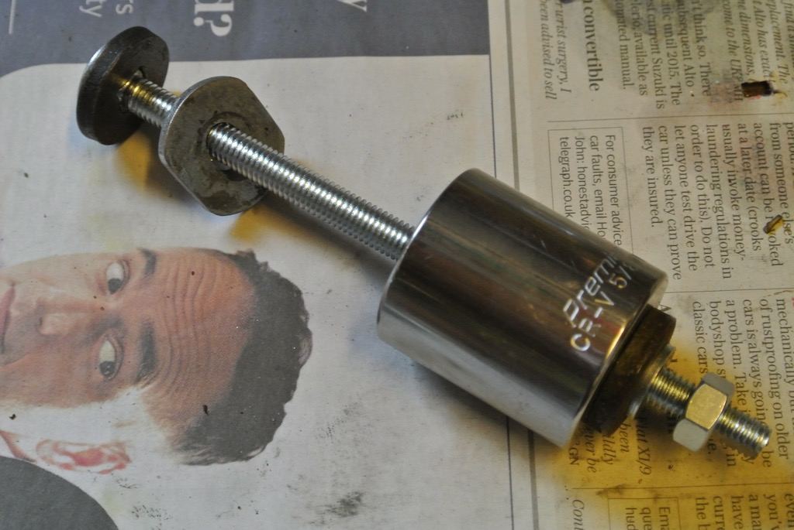

TABC Axle Oil Scroll Removal
In the June issue of the Bulletin, Pete Green asked how he could remove the oil scrolls from the rear axle of his TA. I regularly check the rear drums of my TC for oil and they had always been dry. However, in August of last year I found one drum ‘dripping’ with oil, not due to the inability of the oil scrolls to wick the oil back towards the differential, but due to the failure of the bearing nut and separation of the hub from the half shaft. So I decided to replace the axle nuts with Roger Furneaux's nuts with integrated seals (as well as replace the hub and half shaft on one side). A description of the whole saga can be found at https://aanddnotes.github.io/TC4985/rearAxle/rearAxle.html.
 Consequently it was necessary for me to remove the oil scrolls. I decided to try a technique that I’d used to remove the bushes from the distributor body, but on a slightly larger scale. The first photo shows the oil scroll in situ and the second photo shows the ‘tool’ that I used. Firstly I found a large washer that was the same diameter as the oil scroll and filed flats on opposite sides so that it would easily slide down the bore of the oil scroll. Then, with a round file, I elongated the hole in the centre of the washer so that it will tilt on a bolt. I used a 15cm, 7mm coach bolt on to which I put a thick washer (but small enough to fit down the bore of the oil scroll), the modified washer, a 5/8” BSW socket, a thick washer (big enough to cover the square hole in the socket), a smaller washer and a nut. The socket just needs to be big enough to take the oil scroll as it is withdrawn.
Consequently it was necessary for me to remove the oil scrolls. I decided to try a technique that I’d used to remove the bushes from the distributor body, but on a slightly larger scale. The first photo shows the oil scroll in situ and the second photo shows the ‘tool’ that I used. Firstly I found a large washer that was the same diameter as the oil scroll and filed flats on opposite sides so that it would easily slide down the bore of the oil scroll. Then, with a round file, I elongated the hole in the centre of the washer so that it will tilt on a bolt. I used a 15cm, 7mm coach bolt on to which I put a thick washer (but small enough to fit down the bore of the oil scroll), the modified washer, a 5/8” BSW socket, a thick washer (big enough to cover the square hole in the socket), a smaller washer and a nut. The socket just needs to be big enough to take the oil scroll as it is withdrawn.
The technique is then to slide the head of the bolt and the modified washer down the bore of the oil scroll. Pull back so that the washer is tight behind the oil scroll. Then tighten the nut to pull the oil scroll out. After a while I had to put a large open-ended spanner between the axle and the socket since the latter was not deep enough to take the full length of the oil scroll.
On one side the oil scroll was reluctant to start moving. So I reconfigured the tool with a couple of nuts and washers so that the modified washer was against the outside edge of the oil scroll and I could strike the head of the bolt with a hammer so as to drive the scroll in a millimetre or two, just to overcome the stiction. I could then put the washer behind the scroll and pull it out.
 The final photo shows the two oil scrolls. You can see that one has a left-hand spiral and the other a right-hand spiral. Using this tool meant that I did not need to resort to a hacksaw blade.
The final photo shows the two oil scrolls. You can see that one has a left-hand spiral and the other a right-hand spiral. Using this tool meant that I did not need to resort to a hacksaw blade.
(Written 23rd June 2018; published in MGOCC Bulletin, July 2018, pp 16-17.)
© David James 2020 Last updated: 30th April 2020